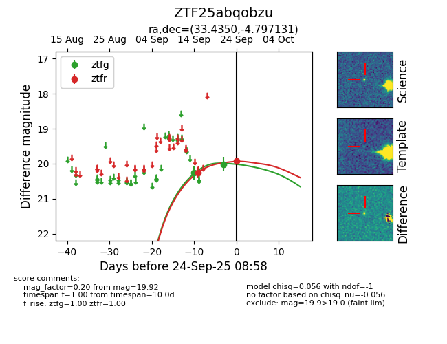
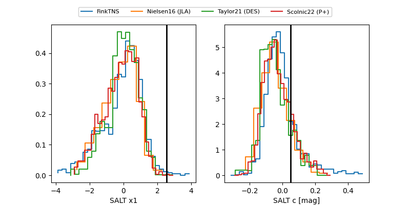

FINK: ZTF25abqobzu
Lasair: ZTF25abqobzu
ALeRCE: ZTF25abqobzu
ZTF25abqobzu (ztf,fink)
equatorial (ra, dec) = (33.4350,-4.79713)
galactic (l, b) = (167.8697,-60.27666)


last ztfg=20.01, ztfr=19.92
2 ztfg, 2 ztfr detections